開発界隈で流行っている技術を、実際に作って理解するための使い捨て実験置き場。各ページでそのまま遊べます。
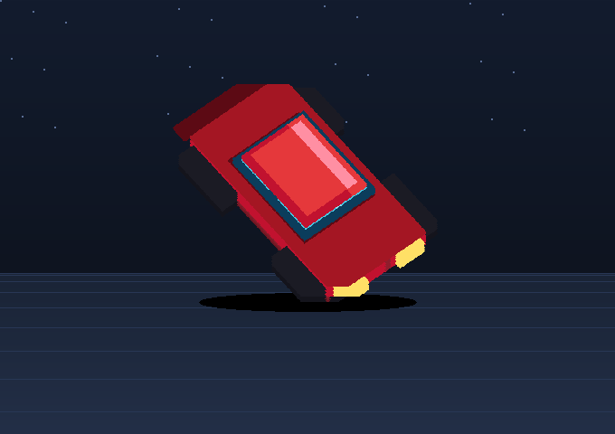
ドット絵を「高さごとの断面」で何枚も描き、全枚を同じ角度で回しながら少しずつ上にずらして重ねると、3Dモデルなしで立体に見える。ドラッグで回転、スライダーで分解もできる。
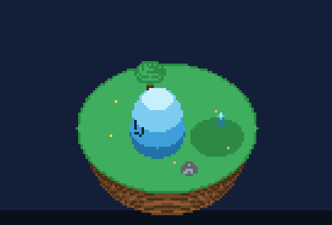
島も木もスライムも全部「断面ドット絵の積み重ね」。全レイヤーを同じ角度で回すと、3Dモデルなしで回転する立体に見える。スライムは層ごとのバネでぴょんぴょん跳ねたり伸びたりする。ドラッグで回転できる。
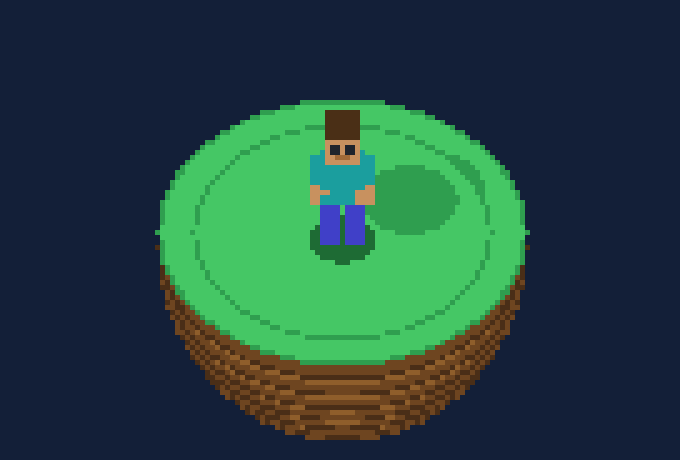
スティーブ風の箱型キャラを丸ごとスタッキングで作り、全関節をトルクPDサーボで駆動。キーフレームなしで歩き、押せばよろけて踏ん張る。生き物のアニメーションの模索。
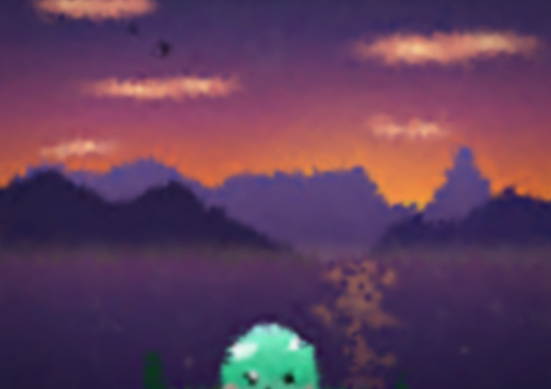
話題の 3DGS の描画エンジンを本物の方式で WebGL2 再実装。スライムの浮島を約3.8万個の 3D ガウシアン（楕円体）で表し、共分散を視点へ投影（Σ' = J W Σ Wᵀ Jᵀ）して奥行き順に α ブレンドする。ポリゴン不使用。ドラッグでぐりぐり回せて、「粒感」スライダーでつぶつぶに分解できる。シーンは手続き生成（写真からの学習は対象外）。
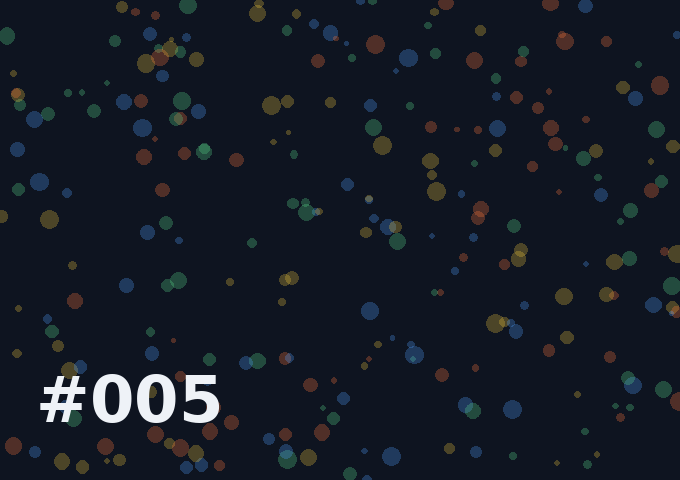
砂・水・油・火・煙をセルオートマトンで本物実装。色砂で絵を描いて、掘って崩したり、油に火をつけて燃やしたりできる。密度で沈む・浮く、延焼、水で消火して蒸気、まで入っている。
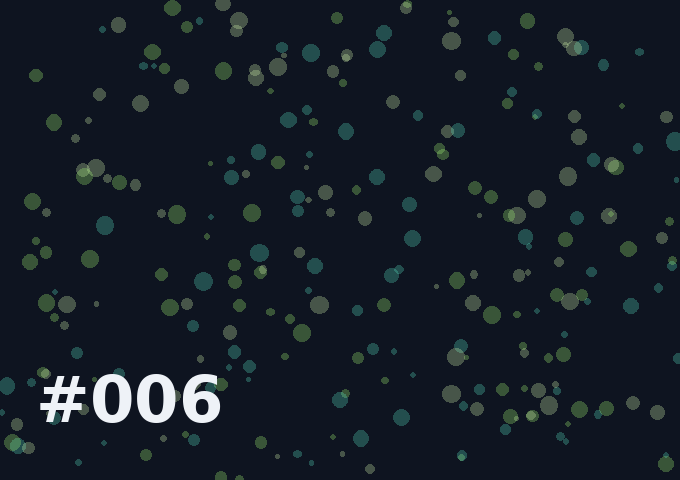
数万のエージェントがフェロモンを嗅いで進み、残していく古典的 Physarum モデル。血管のような網が勝手に自己組織化する。エサを置くと、そちらへ網を張り直す。
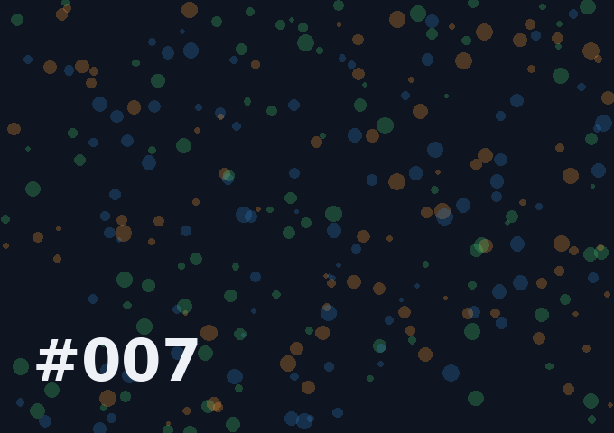
グー・チョキ・パーの三すくみで隣を取り合うセルオートマトン。スライム3色の領地が波のように侵食し合って終わらない。色を選んで描くと戦局に介入できる。
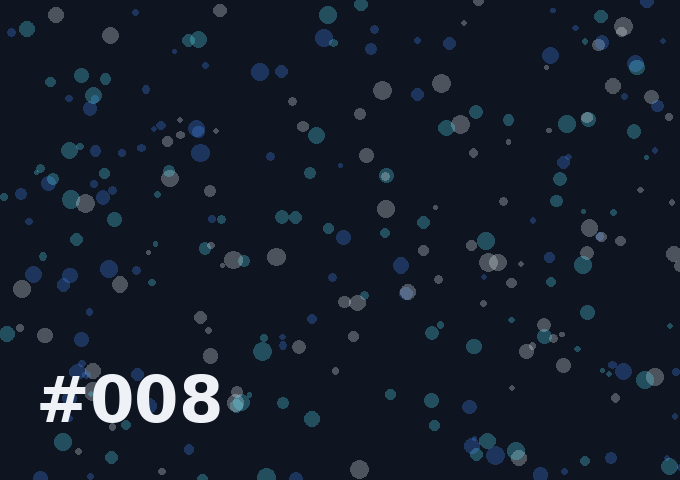
Gray-Scott 方程式をそのまま数値積分。種を置くと珊瑚や斑点の模様がうにょうにょ育つ。プリセットで迷路・波紋・泡と模様の質が変わる。
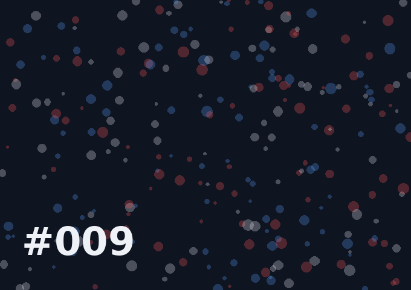
Verlet 積分＋距離制約ソルバの質点バネ系。タワー・橋・ゼリーを掴んで投げると崩れる。バネの伸縮を青（圧縮）→赤（引張）で色付けし、スローモーションで力の伝播を追える。
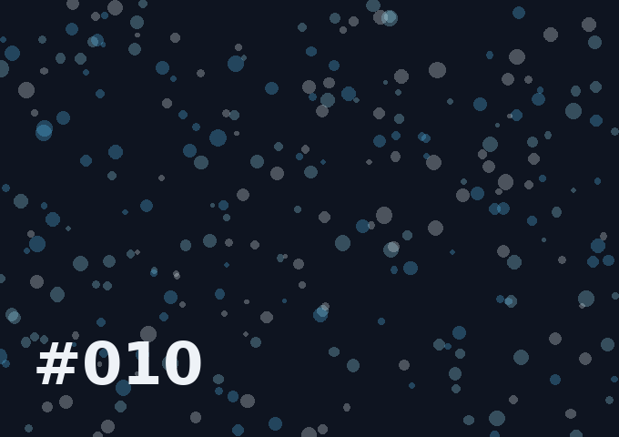
分離・整列・結合の3ルールだけで鳥の群れになる古典モデル。指を動かすと渦を巻いてついてきて、モードを変えると散る。餌を置くとそこに集まる。
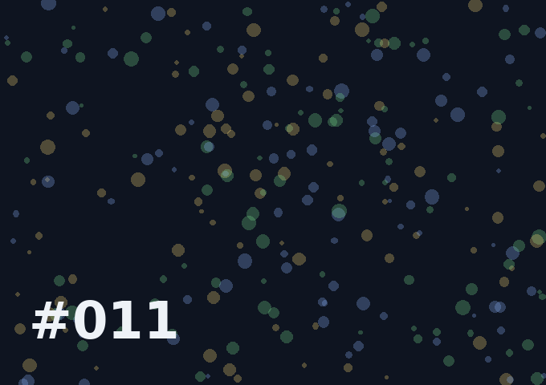
#002 の浮島に「輪郭」を付ける方法の比較実験。スライス単位の境界検出／シルエット膨張／画像処理エッジ検出の3方式を同じシーンで切り替えて、立体感の差を見る。
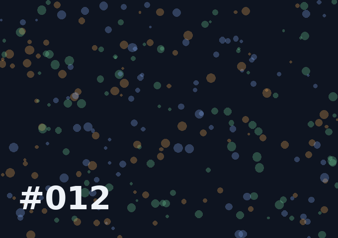
#004 は「描く側」だったので、今度は「学習する側」。20視点の画像から 1,500 個の 3D ガウシアンを最適化でフィットさせた（損失は約71%減、未学習の視点でも再現）。教師画像は実写真でなくレンダリング画像だが、手順は写真でも同じ。学習前／学習後を切り替えて回せる。
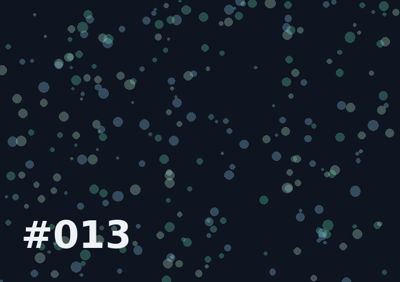
#003 の発展。四足の生き物の脚を2ボーンIKで解き、着地点は「進む先＋地形の高さ」から手続き生成。坂でも段差でも足裏が地面に合い、キーフレームなしで歩き回る。ポインタに寄ってきて、タップで驚く。「骨格表示」でIKの骨と着地ターゲットが見える。